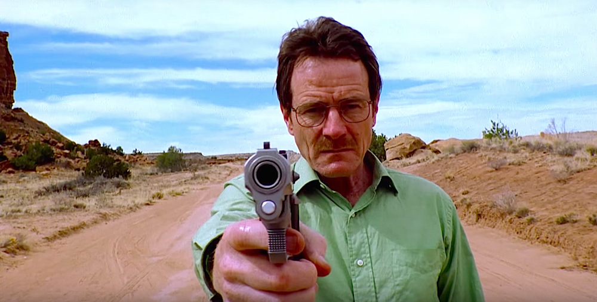
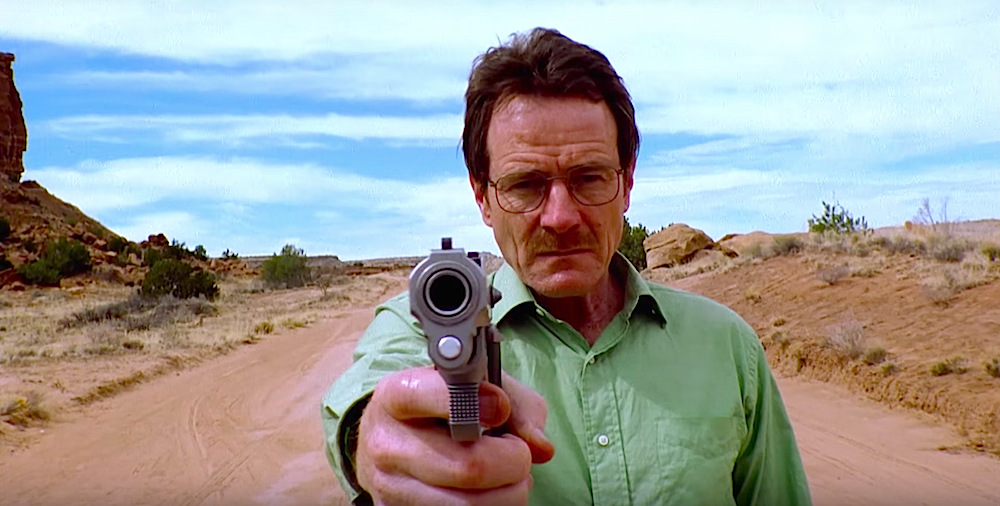
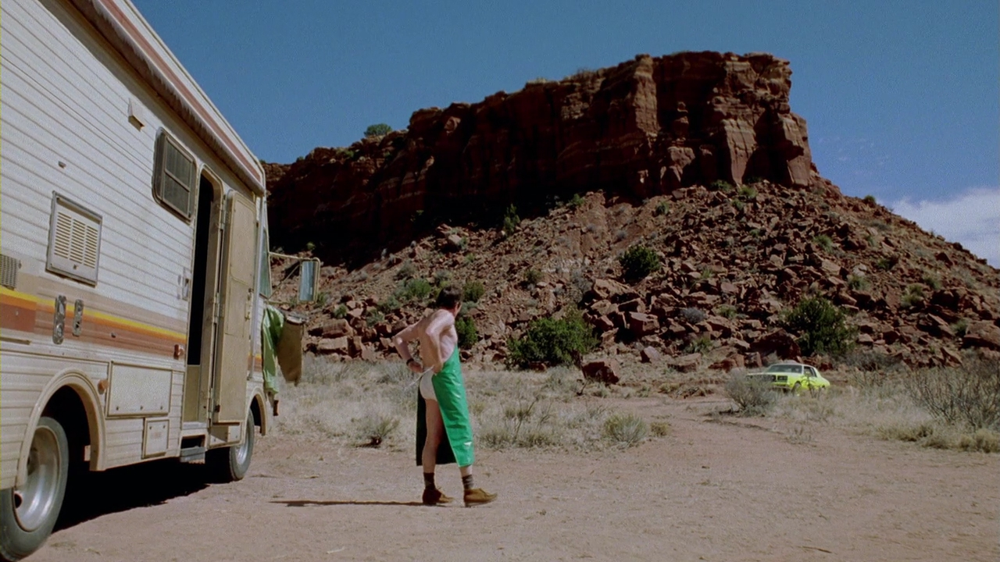

Awal mula sang heseinberg
Episode perkenalan ini berpusat pada Walter White, seorang guru kimia yang didiagnosis menderita kanker paru-paru. Dihadapkan pada kematian dan tagihan medis yang membengkak, ia memutuskan untuk menggunakan keahlian kimianya untuk memasak methamphetamine (sabu) bersama mantan muridnya, Jesse Pinkman. Usaha pertama mereka di tengah gurun New Mexico dengan sebuah RV tua berjalan kacau dan berbahaya, memaksa Walt untuk mengambil langkah ekstrem demi bertahan hidup.
Secara sinematik, episode 'Pilot' ini adalah sebuah masterclass. Vince Gilligan tidak hanya menyajikan premis yang kuat, tetapi juga membangun dunia yang terasa nyata dengan palet warna yang khas dan pergerakan kamera yang penuh perhitungan. Perkembangan karakter Walter White dari seorang pria lemah lembut menjadi sosok yang mampu bertindak di luar nalar disajikan dengan sangat meyakinkan oleh Bryan Cranston, memberikan fondasi yang kokoh untuk sisa seri.

Salah satu adegan paling ikonik adalah saat Walt berdiri di tengah jalan raya hanya dengan kemeja hijau dan celana dalamnya sambil menodongkan pistol. Adegan ini adalah rangkuman visual yang sempurna dari transformasi karakternya. Itu bukan lagi Walt sang guru, melainkan awal dari Heisenberg; seorang pria yang terpojok dan rela melakukan apa pun. Keputusasaan dan kekuatan yang terpancar secara bersamaan dalam adegan itu benar-benar tak terlupakan.